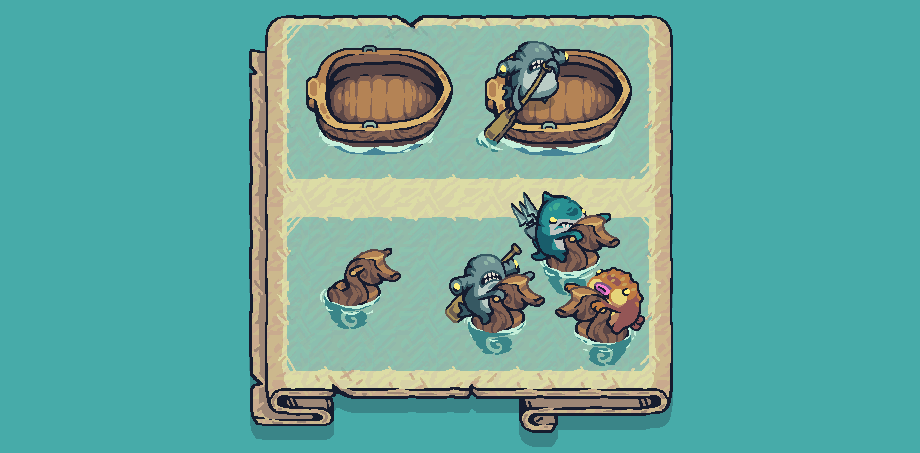

<!doctype html><html lang="pt-BR"><meta charset="utf-8"><meta name="viewport" content="width=device-width,initial-scale=1"><title>Barcos e natação · Referência</title><style>body{margin:0;background:#47a6a5;color:#fff5d4;text-align:center;font:18px Georgia}main{max-width:1000px;margin:auto;padding:20px}img{max-width:100%;image-rendering:pixelated}button{padding:10px;margin:10px;font:inherit}p{font-size:15px}</style><main><h1>Barcos e natação</h1><p>24 quadros originais. Fundo da demonstração preservado.</p><button id="pause">Ver primeiro quadro</button><script>let paused=false;document.getElementById('pause').onclick=function(){paused=!paused;document.getElementById('animation').src=paused?'reference-frame.png':'reference.gif';this.textContent=paused?'Reproduzir animação':'Ver primeiro quadro';};</script></main></html>
